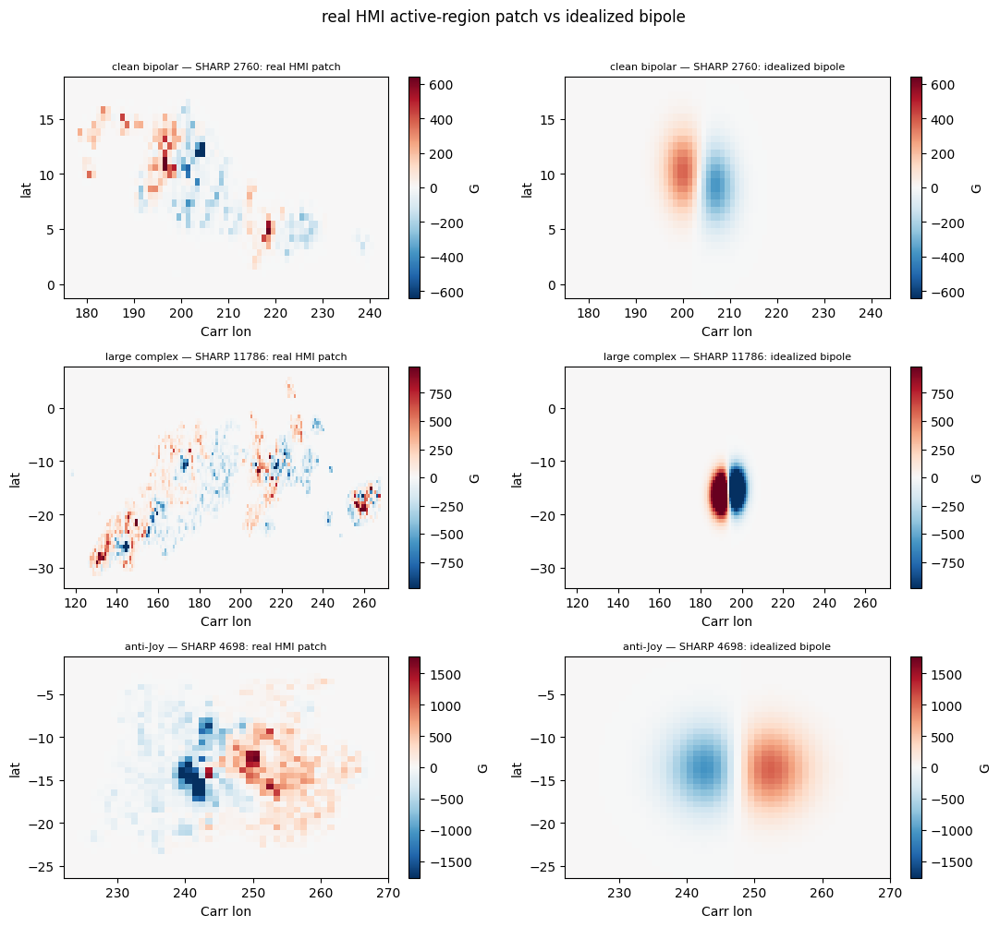
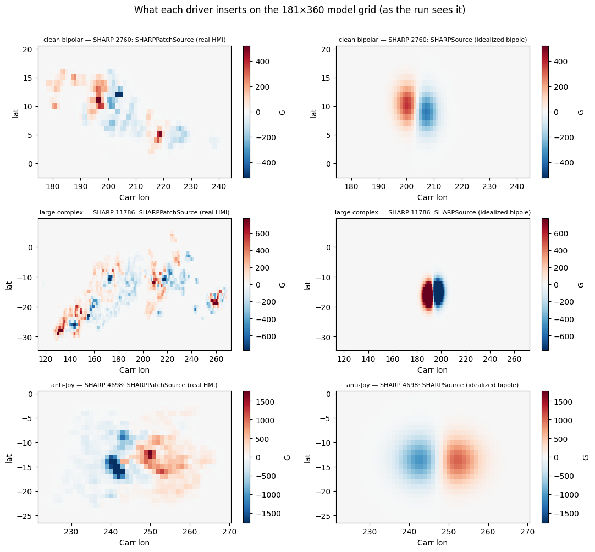
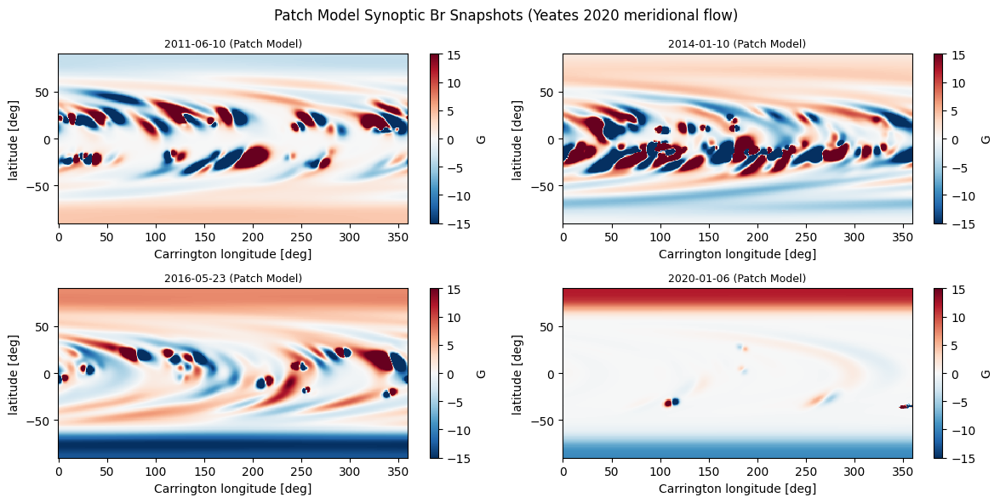
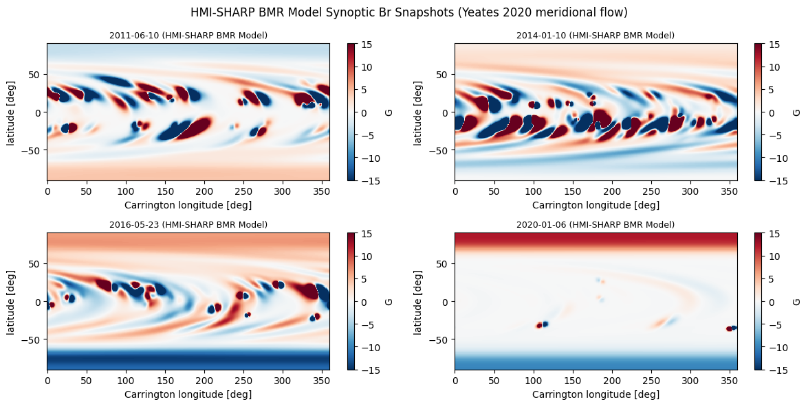
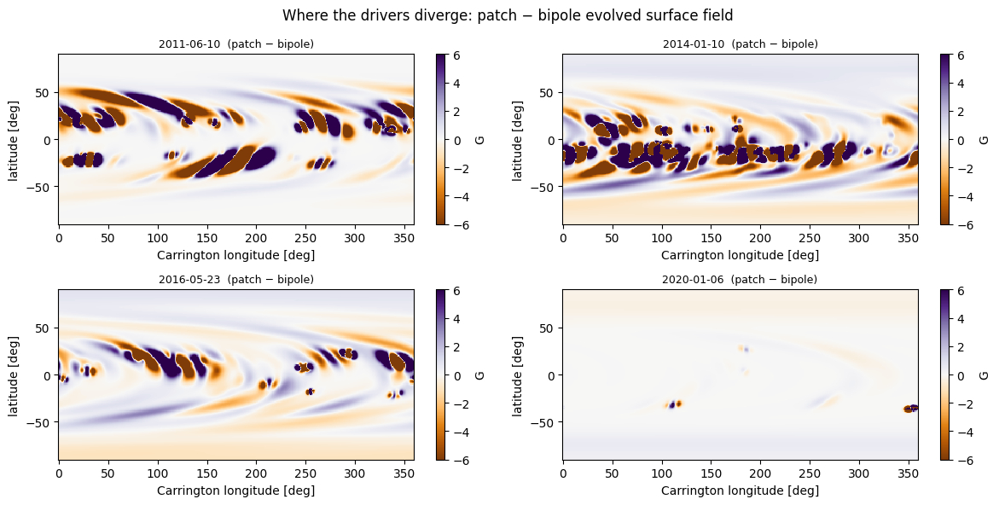
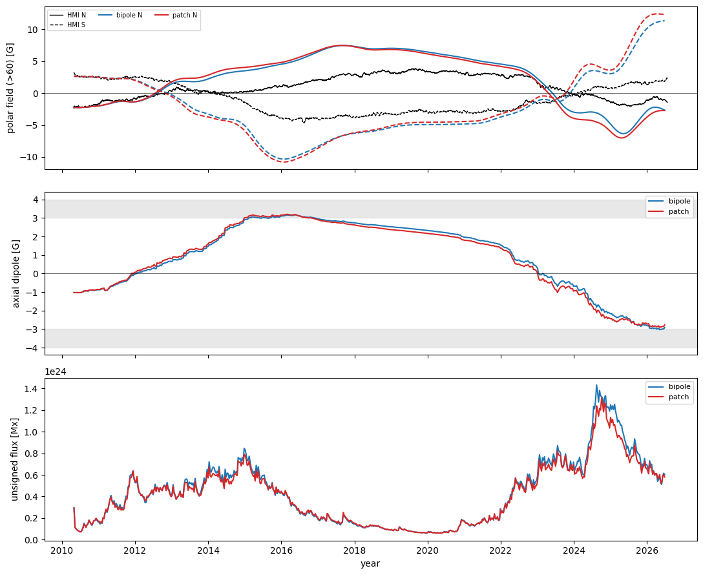
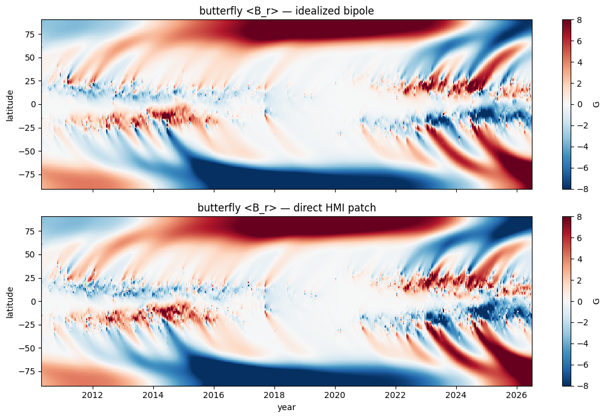

BMR approximation vs direct HMI active-region insertion
The SHARPS-driven runs so far inject each active region as an idealized bipole (SHARPSource / make_bmr_yeates): a smooth two-parameter fit to the region’s flux, separation and tilt. The SHARPS database also stores the real B_r map of every region (sharpNNNNN.nc), so we can instead insert the observed field directly (SHARPPatchSource).
This notebook (1) shows what the idealization discards, and (2) compares the driven-run diagnostics — polar field, axial dipole, unsigned flux, butterfly — between the two, against HMI. The question it answers: does the internal structure of active regions matter for the large-scale field evolution, or is the bipole approximation sufficient?
[1]:
import sys, pathlib, os
try:
import sft2d
except ModuleNotFoundError:
sys.path.insert(0, str(pathlib.Path.cwd().parents[1]))
import numpy as np
import matplotlib.pyplot as plt
from scipy.io import netcdf_file
from sft2d import (create_grid, meridional_flow, differential_rotation, evolve,
SHARPSource, SHARPPatchSource)
from sft2d.src.initial_conditions import initialize_field
from sft2d.src.sharp_driver import _read_catalogue
from sft2d.analysis.analysis import calculate_polar_field, calculate_dm, calculate_usflx
from sft2d.data import HMI_SYNOPTIC_FITS, load_hmi_polar_field
print("sft2d", sft2d.__version__)
sft2d 0.1.0
Paths
NC_DIR is the SHARPS database directory (holding bmrsharps_evol.txt and the sharpNNNNN.nc region maps). Override with the SFT2D_SHARPS_DB environment variable.
[2]:
NC_DIR = os.environ.get(
"SFT2D_SHARPS_DB",
"/Users/sdash/NSO/Work/GIT-Projects/sharps-bmrs-db/sharps-bmrs-db")
CATALOGUE = os.path.join(NC_DIR, "bmrsharps_evol.txt")
assert os.path.exists(CATALOGUE), CATALOGUE
cat = _read_catalogue(CATALOGUE)
print(f"{len(cat)} regions, {cat['date'].min().date()} -> {cat['date'].max().date()}")
2979 regions, 2010-07-06 -> 2026-06-22
1. What the idealization discards
Each .nc holds both br (the real HMI patch) and br_bipole (the database’s fitted bipole), on the same sin-latitude grid. Three representative regions: a clean bipolar AR, a large multipolar complex, and an anti-Joy region.
[3]:
def load_nc(sid):
fh = netcdf_file(os.path.join(NC_DIR, f"sharp{int(sid):05d}.nc"), "r", mmap=False)
br = fh.variables["br"][:].copy(); bp = fh.variables["br_bipole"][:].copy(); fh.close()
return br, bp
have = cat[cat["sharp"].apply(lambda s: os.path.exists(os.path.join(NC_DIR, f"sharp{int(s):05d}.nc")))]
def pick(mask): return int(have[mask].sort_values("flux").iloc[-1]["sharp"])
picks = [(pick((have.tilt.abs()<20)&(have.flux.between(1.5e22,4e22))), "clean bipolar"),
(pick(have.flux>3e23), "large complex"),
(pick(have.tilt.abs()>150), "anti-Joy")]
ns=180; s=np.linspace(-1+1/ns,1-1/ns,ns); lat=np.rad2deg(np.arcsin(s))
nph=360; lon=np.linspace(0.5,359.5,nph)
fig, ax = plt.subplots(len(picks),2,figsize=(11,3.3*len(picks)))
for i,(sid,lab) in enumerate(picks):
br,bp=load_nc(sid); nz=np.abs(br)>0.5; si,pi=np.where(nz)
la=slice(max(si.min()-3,0),si.max()+4); lo=slice(max(pi.min()-3,0),pi.max()+4)
vmax=np.percentile(np.abs(br[nz]),99)
for j,(M,t) in enumerate([(br,"real HMI patch"),(bp,"idealized bipole")]):
a=ax[i,j]; pm=a.pcolormesh(lon[lo],lat[la],M[la,lo],cmap="RdBu_r",vmin=-vmax,vmax=vmax,shading="auto")
a.set_title(f"{lab} — SHARP {sid}: {t}",fontsize=8); a.set_xlabel("Carr lon"); a.set_ylabel("lat")
fig.colorbar(pm,ax=a,label="G")
fig.suptitle("real HMI active-region patch vs idealized bipole",y=1.01); fig.tight_layout()

1b. The same regions, as the model actually receives them
Section 1 compared the raw .nc maps. Here we insert those same three regions through the two drivers — onto the 181×360 model grid, flux-normalised exactly as a driven run would — so we compare like with like: SHARPPatchSource (the real HMI B_r, interpolated) vs SHARPSource (make_bmr_yeates, the idealized bipole). The patch driver clearly delivers the observed multipolar structure and scatter; the bipole driver delivers a clean two-lobe fit of the same total flux.
This is the difference that a synoptic snapshot of the evolved field can no longer show (Section 2, and the note after it): once a region has been sheared and diffused for days-to-weeks, both drivers’ surface maps look alike — which is precisely the physical result the diagnostics quantify.
[4]:
from sft2d import make_bmr_yeates
# Insert the same three regions through the two *drivers*, onto the model grid,
# exactly as a driven run would. This is the emergence field the model sees before
# any transport/diffusion — the difference a synoptic snapshot can no longer show.
g_ins = create_grid(181, 360)
lat_i = 90 - np.rad2deg(g_ins["colatitude"]); lon_i = np.rad2deg(g_ins["longitude"])
src_ins = SHARPPatchSource(CATALOGUE, nc_dir=NC_DIR, start_date="2010-05-01")
fig, ax = plt.subplots(len(picks), 2, figsize=(11, 3.3*len(picks)))
for i, (sid, lab) in enumerate(picks):
row = have[have.sharp.astype(int) == sid].iloc[0]
flux = float(row.flux)
real = src_ins.patch_on_grid(sid, g_ins, flux) # SHARPPatchSource
ideal = make_bmr_yeates(g_ins, row.lat, row.lon, flux, sep_deg=row.sep, tilt_deg=row.tilt) # SHARPSource
nz = np.abs(real) > 1; li, pj = np.where(nz)
la = slice(max(li.min()-3, 0), li.max()+4); lo = slice(max(pj.min()-3, 0), pj.max()+4)
vmax = np.percentile(np.abs(real[nz]), 99)
for j, (M, t) in enumerate([(real, "SHARPPatchSource (real HMI)"),
(ideal, "SHARPSource (idealized bipole)")]):
a = ax[i, j]
pm = a.pcolormesh(lon_i[lo], lat_i[la], M[la, lo], cmap="RdBu_r",
vmin=-vmax, vmax=vmax, shading="auto")
a.set_title(f"{lab} — SHARP {sid}: {t}", fontsize=8)
a.set_xlabel("Carr lon"); a.set_ylabel("lat"); fig.colorbar(pm, ax=a, label="G")
fig.suptitle("What each driver inserts on the 181×360 model grid (as the run sees it)", y=1.01)
fig.tight_layout()

2. Two driven runs, identical except the source
Same observed-map initial condition and 2010–2026 window; only the emergence source differs — SHARPSource (idealized bipoles) vs SHARPPatchSource (real AR maps). Both preserve each region’s measured unsigned flux, so the comparison isolates the flux distribution from the amount. This run uses the Yeates-2020 meridional flow (v₀ = 14 m/s), η = 350 km²/s and τ = 10 yr on a 181×360 grid, and also stores 27-day B_r snapshots of the evolving surface for the synoptic maps below.
~15 min.
[5]:
import pandas as pd
[6]:
import time
grid = create_grid(181, 360)
mf = meridional_flow(grid, 14.0, profile="yeates2020") #yeates2020; schuessler-baumann
dr = differential_rotation(grid)
ETA, TAU = 3.5e8, 10*365.25*86400.0
CAP = 30.0
START, END = "2010-05-01", "2026-06-30"
def run(source, outfile):
field = initialize_field(grid, "read", path=str(HMI_SYNOPTIC_FITS))
yr, pn, ps, dip, usf, bfly = [], [], [], [], [], []
# Snapshot variables
SNAP_EVERY_DAYS = 27
snap_br, snap_day = [], []
class Rec:
def record(self, d, B):
if d % 10 == 0:
yr.append(2010 + 0.33 + d/365.25)
n, s = calculate_polar_field(B, grid, pol_cap_extent_deg=CAP)
pn.append(n); ps.append(s); dip.append(calculate_dm(B, grid))
usf.append(calculate_usflx(B, grid)); bfly.append(B.mean(axis=1).copy())
# Full 2D surface-field snapshots
if d % SNAP_EVERY_DAYS == 0:
snap_br.append(B.copy()); snap_day.append(d)
evolve(field, grid, mf, dr, ETA, source.num_days, source=source, tau_decay_s=TAU, recorder=Rec())
# Process and save snapshots
snap_br = np.array(snap_br)
snap_date = pd.to_datetime(START) + pd.to_timedelta(snap_day, unit='D')
snap_year = np.array([d.year + (d.dayofyear-1)/365.25 for d in snap_date])
lat = np.rad2deg(np.pi/2 - grid['colatitude'])
lon = np.rad2deg(grid['longitude'])
np.savez_compressed(
outfile,
br=snap_br.astype(np.float32),
date=np.array([str(d.date()) for d in snap_date]),
year=snap_year, lat=lat, lon=lon,
)
print(f"wrote {outfile} "
f"({pathlib.Path(outfile).stat().st_size/1e6:.1f} MB, {len(snap_br)} maps)")
return dict(yr=np.array(yr), pn=np.array(pn), ps=np.array(ps), dip=np.array(dip),
usf=np.array(usf), bfly=np.array(bfly).T)
# Execute both runs with different snapshot output files
t0 = time.time()
src_bmr = SHARPSource(CATALOGUE, start_date=START, end_date=END, flux_scale=1.0)
res_bmr = run(src_bmr, 'bmr_surface_fields_y20.npz')
print(f"bipole run: {time.time()-t0:.0f}s\n")
t0 = time.time()
src_patch = SHARPPatchSource(CATALOGUE, nc_dir=NC_DIR, start_date=START, end_date=END, flux_scale=1.0)
res_patch = run(src_patch, 'patch_surface_fields_y20.npz')
print(f"patch run: {time.time()-t0:.0f}s\n")
# --- Helper functions and Plotting ---
def nearest_snapshot(date, path):
"""Return (br_map, date_str, lat, lon) of the saved snapshot nearest `date`."""
z = np.load(path, allow_pickle=False)
t = pd.Timestamp(date); ty = t.year + (t.dayofyear-1)/365.25
i = int(np.argmin(np.abs(z['year'] - ty)))
return z['br'][i], str(z['date'][i]), z['lat'], z['lon']
def show_synoptic(ax, br, lat, lon, title, bmax=15):
pm = ax.pcolormesh(lon, lat, br, cmap='RdBu_r', vmin=-bmax, vmax=bmax, shading='auto')
ax.set_title(title, fontsize=9)
ax.set_xlabel('Carrington longitude [deg]'); ax.set_ylabel('latitude [deg]')
return pm
# Synoptic snapshots of the evolved (transported + diffused) surface field.
# NB: these are the *evolved* field, not the emergence field — every region has
# been sheared and diffused for days-to-weeks before it is sampled, so its raw
# HMI structure is gone in BOTH drivers (see Section 1b for the as-inserted maps).
picks = ['2011-06-01', '2014-01-01', '2016-06-01', '2020-01-01']
fig, axes = plt.subplots(2, 2, figsize=(12, 6))
for a, d in zip(axes.ravel(), picks):
br, dd, la, lo = nearest_snapshot(d, path='patch_surface_fields_y20.npz')
pm = show_synoptic(a, br, la, lo, f"{dd} (Patch Model)", bmax=15)
fig.colorbar(pm, ax=a, label='G')
fig.suptitle('Patch Model Synoptic Br Snapshots (Yeates 2020 meridional flow)')
fig.tight_layout()
plt.show()
wrote bmr_surface_fields_y20.npz (49.7 MB, 219 maps)
bipole run: 788s
wrote patch_surface_fields_y20.npz (49.8 MB, 219 maps)
patch run: 821s

[7]:
fig, axes = plt.subplots(2, 2, figsize=(12, 6))
for a, d in zip(axes.ravel(), picks):
br, dd, la, lo = nearest_snapshot(d, path='bmr_surface_fields_y20.npz')
pm = show_synoptic(a, br, la, lo, f"{dd} (HMI-SHARP BMR Model)", bmax=15)
fig.colorbar(pm, ax=a, label='G')
fig.suptitle('HMI-SHARP BMR Model Synoptic Br Snapshots (Yeates 2020 meridional flow)')
fig.tight_layout()
plt.show()

Why the two evolved snapshots look alike — and where they don’t
The two synoptic maps above are the evolved surface field: by the time emerged flux is sampled it has been sheared by differential rotation and spread by supergranular diffusion for days-to-weeks, so a saturated (|B|≤15 G) synoptic view of either driver shows the same smooth, blob-like active regions. That is not the patch driver inserting idealized bipoles — Sections 1 and 1b show it inserts the real HMI structure faithfully; it is diffusion erasing that structure before the
snapshot is taken, identically for both drivers.
That near-identity is itself the headline result: for the large-scale field the bipole approximation reproduces the direct-patch run (Yeates 2020). The residual patch − bipole map below isolates where the two genuinely differ.
[8]:
# Where the two drivers diverge: patch - bipole, same date, same evolved field.
# The difference concentrates at active latitudes (the AR belts) where the real
# internal structure and effective tilt depart from the fitted bipole; the
# large-scale poleward/polar field is nearly identical (the bipole approximation
# works for transport). This is the meaningful structural signal, not the
# saturated blobs above.
fig, axes = plt.subplots(2, 2, figsize=(12, 6))
for a, d in zip(axes.ravel(), picks):
bp, dd, la, lo = nearest_snapshot(d, path='patch_surface_fields_y20.npz')
bb, _, _, _ = nearest_snapshot(d, path='bmr_surface_fields_y20.npz')
pm = a.pcolormesh(lo, la, bp - bb, cmap='PuOr', vmin=-6, vmax=6, shading='auto')
a.set_title(f"{dd} (patch − bipole)", fontsize=9)
a.set_xlabel('Carrington longitude [deg]'); a.set_ylabel('latitude [deg]')
fig.colorbar(pm, ax=a, label='G')
fig.suptitle('Where the drivers diverge: patch − bipole evolved surface field')
fig.tight_layout()
plt.show()

3. Polar field, axial dipole, unsigned flux — both drivers vs HMI
[9]:
hmi = load_hmi_polar_field(); idx = hmi["mean_north"].index
hyr = idx.year + (idx.dayofyear-1)/365.25
mn, ms = hmi["mean_north"].values, hmi["mean_south"].values
def corr(a, b_yr, o): # a: model, o: obs mean series on hyr
oi = np.interp(b_yr, hyr, o); return np.corrcoef(a, oi)[0,1]
print(f"{'driver':10} {'peakD':>7} {'corrN':>7} {'corrS':>7}")
for lab, r in (("bipole", res_bmr), ("patch", res_patch)):
print(f"{lab:10} {np.abs(r['dip']).max():7.2f} {corr(r['pn'],r['yr'],mn):+7.3f} {corr(r['ps'],r['yr'],ms):+7.3f}")
fig, ax = plt.subplots(3,1,figsize=(11,9),sharex=True)
ax[0].plot(hyr,mn,"k",lw=1,label="HMI N"); ax[0].plot(hyr,ms,"k--",lw=1,label="HMI S")
ax[0].plot(res_bmr["yr"],res_bmr["pn"],"C0",label="bipole N"); ax[0].plot(res_bmr["yr"],res_bmr["ps"],"C0--")
ax[0].plot(res_patch["yr"],res_patch["pn"],"C3",label="patch N"); ax[0].plot(res_patch["yr"],res_patch["ps"],"C3--")
ax[0].axhline(0,color="k",lw=0.4); ax[0].set_ylabel("polar field (>60) [G]"); ax[0].legend(ncol=3,fontsize=7)
ax[1].axhspan(3,4,color="0.85",alpha=0.6); ax[1].axhspan(-4,-3,color="0.85",alpha=0.6)
ax[1].plot(res_bmr["yr"],res_bmr["dip"],"C0",label="bipole"); ax[1].plot(res_patch["yr"],res_patch["dip"],"C3",label="patch")
ax[1].axhline(0,color="k",lw=0.4); ax[1].set_ylabel("axial dipole [G]"); ax[1].legend(fontsize=8)
ax[2].plot(res_bmr["yr"],res_bmr["usf"],"C0",label="bipole"); ax[2].plot(res_patch["yr"],res_patch["usf"],"C3",label="patch")
ax[2].set_ylabel("unsigned flux [Mx]"); ax[2].set_xlabel("year"); ax[2].legend(fontsize=8)
fig.tight_layout()
driver peakD corrN corrS
bipole 3.17 +0.901 +0.856
patch 3.20 +0.857 +0.816

4. Butterfly diagrams side by side
[10]:
lat_g = np.rad2deg(np.pi/2 - grid["colatitude"])
fig, ax = plt.subplots(2,1,figsize=(11,7),sharex=True)
vmax = 8
for a,(lab,r) in zip(ax, (("idealized bipole",res_bmr),("direct HMI patch",res_patch))):
pm=a.pcolormesh(r["yr"],lat_g,r["bfly"],cmap="RdBu_r",vmin=-vmax,vmax=vmax,shading="auto")
a.set_ylabel("latitude"); a.set_title(f"butterfly <B_r> — {lab}"); fig.colorbar(pm,ax=a,label="G")
ax[1].set_xlabel("year"); fig.tight_layout()

5. Reading the comparison
Fill in from your run, but the questions:
Do the axial dipole and its cycle-24 peak differ between the bipole and patch drivers? (They share the same total flux per region, so differences come from the flux distribution — how each region’s structure and effective tilt project onto the axial dipole.)
Does the polar-field correlation with HMI improve, worsen, or stay the same with the real patches?
Is the butterfly more realistically textured with direct insertion, and does that change the poleward surges?
The real patches carry the observed hemispheric asymmetry and multipolar tilt scatter that the idealization averages out — does that help the cycle-25 south-hemisphere reversal timing that the bipole run got late?
Caveats: at 91×180 the SHARP maps (180×360) are interpolated onto a coarser grid, so the finest AR structure is smoothed either way; run at 181×360 to reduce it. Both drivers preserve each region’s measured unsigned flux, so this isolates distribution from amount.